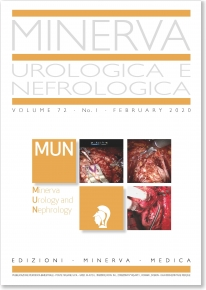

|  |
JOURNAL TOOLS |
| eTOC |
| Per abbonarsi PROMO |
| Sottometti un articolo |
| Segnala alla tua biblioteca |
ARTICLE TOOLS |
| Estratti |
I TUOI DATI
I TUOI ORDINI
CESTINO ACQUISTI
N. prodotti: 0
Totale ordine: € 0,00
COME ORDINARE
I TUOI ABBONAMENTI
I TUOI ARTICOLI
I TUOI EBOOK
COUPON
ACCESSIBILITÀ
ARTICOLI ORIGINALI
Minerva Urologica e Nefrologica 2012 June;64(2):135-41
Copyright © 2012 EDIZIONI MINERVA MEDICA
lingua: Italiano
Ruolo di Proxelan nel trattamento delle prostatiti croniche. Risultati di un trial randomizzato
Galeone G. 1, Spadavecchia R. 1, Balducci M. T. 2, Pagliarulo V. 1 ✉
1 Sezione di Urologia e Andrologia, Dipartimento delle Emergenze e Trapianti di Organi (DETO), Università di Bari Aldo Moro, Bari, Italia; 2 Osservatorio Epidemiologico della Regione Puglia, Università di Bari Aldo Moro, Bari, Italia
Obiettivo. Le patologie infiammatorie della prostata rappresentano uno dei problemi più difficili da gestire nel maschio fertile di età compresa tra i 20 e i 50 anni. La terapia antibiotica rappresenta il gold standard per il trattamento sia delle forme batteriche (categoria II-NIH), che delle algie prostatiche in assenza di positività colturale (categoria III-NIH). Tuttavia, l’antibiotico deve spesso essere accompagnato ad altre soluzioni terapeutiche che si pongono l’obiettivo di migliorare la sintomatologia e la qualità di vita di questi soggetti. Nel presente studio abbiamo testato l’efficacia del DM Proxelan Supposte in associazione alla terapia antibiotica.
Metodi. A partire da Gennaio 2011 abbiamo condotto uno studio randomizzato su 60 soggetti affetti da prostatite cronica batterica ed abatterica suddividendoli in 2 gruppi. Gruppo A trattato con la sola terapia antibiotica per 28 giorni; gruppo B trattato con terapia antibiotica + Proxelan, sempre per 28 giorni. Tutti i soggetti sono stati sottoposti a test di Meares–Stamey, questionari IPSS e NIH-CPSI sia prima della randomizzazione, che dopo 60 e 120 giorni dalla randomizzazione. Efficacia microbiologica e clinica sono state confrontate utilizzando test statistici specifici.
Risultati. Sono stati raccolti ed elaborati dati relativi a 29 soggetti appartenenti al Gruppo A e 31 al Gruppo B; gli effetti collaterali sono stati minimi e in nessun caso hanno comportato interruzione o sospensione del trattamento. Il 68,3% della popolazione totale ha dimostrato una positività colturale al test di Meares-Stamey di inizio studio. Il Proxelan non si è dimostrato più efficace della sola terapia antibiotica in termini microbiologici (OR)=0,9; (IR) 0,3-2,8; p=0,46. Rispetto alla risposta fornita al questionario NIH-CPSI, i soggetti del gruppo B hanno fornito un punteggio migliore rispetto ai soggetti del Gruppo A, sia a 2 mesi (OR: 2,8; 95% IC 1,2-4,1; P=0,017) che a 4 mesi (OR:1,67; 95%IC 0,9- 2,9; P=0,04). Rispetto alla risposta fornita al questionario IPSS, i pazienti del gruppo A avevano una probabilità doppia di avere disturbi minzionali a 2 mesi (OR:1,9; 95% IC 1,0- 3,5; P=0,028). Sebbene l’uso di Proxelan sembri migliorare lo score dell’IPSS anche a 4 mesi, la differenza non raggiunge livelli di significatività.
Conclusioni. Rispetto alla sola terapia antibiotica, l’associazione con il DM Proxelan Supposte non è più efficace da un punto di vista microbiologico ma produce un miglioramento sia dei sintomi associati alla prostatite cronica sia dei disturbi minzionali. Studi futuri, oltre che per confermare i nostri dati, saranno utili nel dimostrare il meccanismo dell’azione terapeutica di Proxelan.